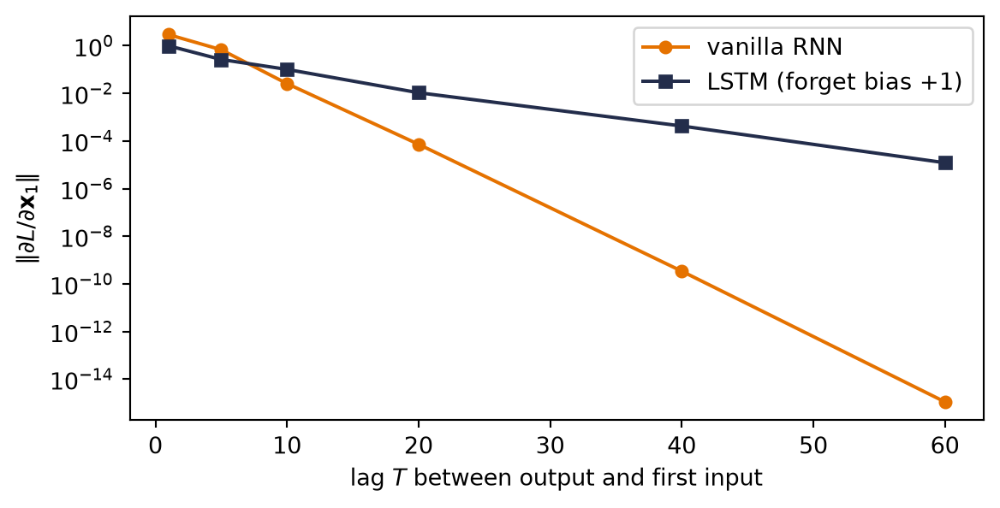

Part II taught machines to see, and every trick in it leaned on one fact about images: an image arrives all at once, at a fixed size. This part is about data that refuses both conditions. Text, audio, sensor streams, stock prices — they come one piece at a time, they stop whenever they please, and their meaning lives in the order of the pieces.
Order deserves a moment, because the book has been here before with the opposite verdict. Chapter 6 shuffled every pixel with one fixed permutation and retrained the MLP to the same accuracy: because that coordinate map was invertible, the first-layer weights could absorb it. The trained MLP was still position-specific; it was not a bag model. Now shuffle the words of this sentence and read it back. For sequences, no single compensating remap preserves arbitrary order — order is most of the signal. We need models whose computation represents it explicitly.
10.1 Stretching the old toolkit
Before building anything new, the book’s habit: try what we own.
A window. Predict the next element from the last \(k\): slide a width-\(k\) window along the sequence and feed each snapshot to an MLP. This should feel familiar twice over: it is autoregression, and the sliding is Chapter 7’s one-dimensional convolution — locality, transplanted from space to time. Windows are genuinely useful (they power real forecasting systems), but they inherit locality’s blind spot: anything older than \(k\) steps ago does not exist. Widen \(k\) and the parameter count grows with it, yet no finite window survives the sentence “The company whose first-day price we recorded back in January finally …”. Context has no fixed radius.
A function per timestep. Then let the model change over time: learn \(f_1\) for step one, \(f_2\) for step two, each passing a summary forward. The lecture builds this strawman carefully, because its failure names the cure. The parameter count now grows with sequence length; a length-500 essay needs 500 learned functions; and the model is non-stationary — it insists the rules of language at position 17 differ from the rules at position 18, when the whole point of language is that they do not.
You have watched this book face that exact configuration twice. A template for every image position was wasteful and brittle \(\rightarrow\) share the kernel across space (Chapter 7). A detector per location was the wrong prior \(\rightarrow\) share it (Chapter 8). The move is the same here, and it is the chapter’s one big idea: share the function across time,
one learned rule \(f\), applied at every step, carrying a running summary \(\vect{h}_t\) — the hidden state — from each step to the next. This is the book’s third weight sharing: across examples (every chapter since the first), across space (Part II), and now across time. Stationarity is to sequences what translation equivariance was to images: the same pattern means the same thing whenever it occurs.
NoteThe hidden state is a running memory — and a Markov claim
\(\vect{h}_t\) is whatever \(f\) chooses to remember about everything seen so far, compressed into one fixed-size vector. Feeding it back in makes a claim with a classical name, the Markov property: \(\vect{h}_{t-1}\) and \(\vect{x}_t\) together contain everything needed for the next step. Nothing else from the past gets a second look. That claim buys streaming (process tokens as they arrive), any sequence length (the loop doesn’t care), and — later in this chapter — the license to train on chopped-up chunks. Its price is that the memory is finite, and this part of the book ends when we finally refuse to pay that price (Chapter 12).
10.2 A network with a loop
The simplest choice of \(f\) is Chapter 3’s recipe with the state concatenated in: a linear map of \((\vect{h}_{t-1}, \vect{x}_t)\), squashed by a \(\tanh\):
the vanilla recurrent neural network. Three weight matrices total, reused at every step, regardless of whether the sequence has five tokens or five thousand. The readout \(\vect{o}_t\) produces logits — Chapter 2’s machinery — and you can collect one at every step (predicting each next character, labeling each word) or only at the end (classifying the whole sequence); both designs appear below.
Per the book’s habit, build the loop by hand, then verify against the framework:
Code: the recurrence, written as the loop it is
import torchimport torch.nn as nnimport torch.nn.functional as Fimport matplotlib.pyplot as plttorch.manual_seed(6050)V, H, T, B =8, 16, 12, 4# vocab, hidden, time, batchrnn = nn.RNN(V, H, batch_first=True)x = torch.randn(B, T, V)out_ref, _ = rnn(x)W_xh, W_hh = rnn.weight_ih_l0, rnn.weight_hh_l0b = rnn.bias_ih_l0 + rnn.bias_hh_l0h = torch.zeros(B, H) # h_0 = 0, the standard startouts = []for t inrange(T): # the loop IS the architecture h = torch.tanh(x[:, t] @ W_xh.T + h @ W_hh.T + b) outs.append(h)manual = torch.stack(outs, 1)print(f"manual loop vs. nn.RNN: max |diff| = {(manual - out_ref).abs().max():.1e}")
manual loop vs. nn.RNN: max |diff| = 1.2e-07
Notice what the shapes say. nn.RNN eats (batch, time, features) — a third axis has joined Chapter 8’s NCHW discipline — and the loop runs over that middle axis carrying h along. Unroll the loop on paper and the RNN is an ordinary feed-forward network that happens to be \(T\) layers deep with every layer’s weights tied. Hold that thought; it is about to matter enormously.
10.3 Blame through time
Tied depth means Chapter 5’s rules apply verbatim. To train on a sequence, run the loop forward, collect losses at the readouts, and backpropagate through the unrolled network, a procedure called backpropagation through time (BPTT). Blame that lands on \(\vect{h}_T\) must travel back through every application of Equation 10.2 to reach an early input. Define \(\matr{D}_t = \mathrm{diag}\!\left(\tanh'(\cdot)\right)\) at step \(t\). The forward Jacobian for one hop is \(\matr{D}_t\matr{W}_{hh}\), so the full Jacobian is
A product of \(T\) near-identical matrices. The second expression shows the reverse-mode order explicitly: the derivative gate acts on incoming blame, then \(\matr{W}_{hh}^{\top}\) carries it to the previous state. Chapter 5 taught you to fear this shape. If the factors shrink the signal, the product dies exponentially; if they grow it, it explodes exponentially. Since \(\tanh' \le 1\) and \(\matr{W}_{hh}\) repeats at every step, keeping every relevant direction near unit gain over a long sequence is a fragile special case. Depth was measured in layers there; here it is measured in time, and a paragraph of text is a hundred layers deep. Watch the collapse, in the spirit of Chapter 5’s depth experiment:
Code: gradient reaching the first input vs. lag
def grad_at_first_input(rec: nn.Module, lags: list[int], vocab: int=4) ->list[float]: norms = []for T in lags: generator = torch.Generator().manual_seed(100+ T) x = torch.randn(8, T, vocab, generator=generator, requires_grad=True) o, _ = rec(x) o[:, -1].sum().backward() norms.append(x.grad[:, 0].norm().item()) # blame on input #1return normslags = [1, 5, 10, 20, 40, 60]torch.manual_seed(0)vanilla = nn.RNN(4, 32, batch_first=True)g_rnn = grad_at_first_input(vanilla, lags)print("lag: "+" ".join(f"{l:>7d}"for l in lags))print("|grad|: "+" ".join(f"{g:.1e}"for g in g_rnn))plt.figure(figsize=(6.2, 3.2))plt.semilogy(lags, g_rnn, "o-", color="#E57200", ms=5, label="vanilla RNN")plt.xlabel("lag $T$ between output and first input")plt.ylabel(r"$\|\partial L / \partial \mathbf{x}_1\|$")plt.legend(); plt.tight_layout(); plt.show()
Figure 10.1: How much a freshly initialized vanilla RNN’s output can blame its first input, as the lag between them grows. Fifteen orders of magnitude gone by sixty steps: the same exponential decay Chapter 5 measured down a deep network, now measured across time — because an unrolled RNN is a deep network with tied weights.
By lag 60 the gradient reaching the first input is \(10^{-15}\): at initialization, whatever happened at the start supplies almost no usable learning signal. That makes success fragile rather than mathematically impossible — a later experiment catches one lucky seed. The mirror-image failure, explosion, is just as real — one large spike in Equation 10.3’s product can make an update destabilize training.
WarningGradient clipping is a seatbelt, not a cure
Practice handles explosion with gradient clipping: if the gradient’s norm exceeds a threshold, rescale it down to the threshold before stepping (nn.utils.clip_grad_norm_ — it appears in every training loop below). The lecture is blunt about what this buys: it tames the spikes so training survives, at the cost of damping legitimately large steps — and it does nothing for vanishing. You cannot clip your way to a longer memory.
Training with a finite horizon
BPTT has a second, blunter problem: unrolling a book-length sequence costs book-length memory and compute per step. The standard fix leans on the Markov claim from the callout above. In truncated BPTT, contiguous chunks carry the recurrent state forward but detach it at each boundary. The values cross the boundary; the gradient graph does not. This bounds memory while preserving running context.
The final experiment below uses a simpler finite-horizon recipe: it samples random 100-character windows and starts each from zero state. That is fixed-window training, not truncated BPTT, because no state is carried between windows. It is cheap and appropriate for this small demonstration, but the model can neither see nor learn dependencies beyond 100 characters. In production character models, contiguous chunks of roughly 20–50 steps with carried-and-detached state are common. In either recipe, clipping handles spikes; neither creates gradients beyond the truncation horizon.
10.4 Engineering a memory: the LSTM
So the vanilla RNN’s memory dies of repeated multiplication. The seed notes stage the fix as a design-by-constraints exercise, and it is worth walking, because you already own its key move. We want a memory pathway that is:
Preserved by default. Repeated multiplication killed the signal \(\rightarrow\) make the carried state additive: \(\vect{c}_t = \vect{c}_{t-1} + \Delta_t\). A conveyor belt: information rides along untouched unless something deliberately intervenes. You met this exact maneuver one chapter ago — Chapter 9’s residual connection, \(H(x) = F(x) + x\), whose Jacobian’s identity term let gradients cross forty layers. Same trick, laid across time.
Forgettable on command. Memory is finite; some of it should expire. Install a valve: \(\vect{f}_t \in (0,1)\) multiplying \(\vect{c}_{t-1}\).
Writable on command. New information enters through a second valve \(\vect{i}_t\) scaling a candidate \(\tilde{\vect{c}}_t\).
Readable on command. Expose only what the current step needs, through a third valve \(\vect{o}_t\).
Each valve is a small learned layer squashed by a sigmoid — Chapter 2’s machine, reinterpreted: a number in \((0,1)\) read as what fraction passes. The candidate content is shaped by \(\tanh\), keeping it bounded and centered. Assembled, this is the Long Short-Term Memory cell (Hochreiter & Schmidhuber, 1997):
Figure 10.2: The LSTM cell as a conveyor belt with valves. The forget gate \(f_t\) controls how much old cell state continues; the input gate \(i_t\) controls how much candidate content is added; the output gate \(o_t\) controls what becomes visible as \(h_t\). The upper additive route is the long-memory highway.
Two states now travel: the cell state \(\vect{c}_t\) (long-term memory, the conveyor belt) and the hidden state \(\vect{h}_t\) (working memory, playing the vanilla RNN’s old role). The line that changes everything is the \(\vect{c}_t\) update — read its gradient the way the seed’s notes do:
Still a product — but of learned, data-dependent gates, not a fixed weight matrix. Where Chapter 9’s residual highway kept an unconditional identity lane open, the LSTM’s lane has a valve the network controls: hold \(\vect{f}_j\) near 1 and gradients ride the conveyor belt across dozens of steps; drop it toward 0 and the memory (deliberately) expires. The practical corollary, straight from the lecture notes: initialize the forget-gate bias positive (say \(+1\)), so the cell starts life remembering by default. PyTorch stores separate input-hidden and hidden-hidden bias vectors, then adds them. The code sets their sum to \(+1\); setting both slices to \(+1\) would silently create an effective bias of \(+2\). Watch what that buys, on the same axes as before:
Code: gradient vs. lag, vanilla RNN against LSTM
torch.manual_seed(0)lstm = nn.LSTM(4, 32, batch_first=True)with torch.no_grad(): n = lstm.bias_ih_l0.shape[0] //4 lstm.bias_ih_l0[n:2* n].fill_(1.0) lstm.bias_hh_l0[n:2* n].zero_() # the two bias slices sum to +1g_lstm = grad_at_first_input(lstm, lags)plt.figure(figsize=(6.2, 3.2))plt.semilogy(lags, g_rnn, "o-", color="#E57200", ms=5, label="vanilla RNN")plt.semilogy(lags, g_lstm, "s-", color="#232D4B", ms=5, label="LSTM (forget bias +1)")plt.xlabel("lag $T$ between output and first input")plt.ylabel(r"$\|\partial L / \partial \mathbf{x}_1\|$")plt.legend(); plt.tight_layout(); plt.show()

Figure 10.3: The gradient-vs-lag experiment, rerun with an LSTM whose effective forget-gate bias is initialized to +1. The vanilla RNN’s blame signal dies exponentially; the LSTM’s rides the cell-state conveyor belt and arrives at lag 60 attenuated but alive, about ten orders of magnitude stronger. Chapter 9 built this highway across layers; the LSTM builds it across time, with a learned valve on the on-ramp.
The memory test
Gradients at initialization are promissory notes; training is where they get cashed. The seed notes pose the decisive task as a two-company story: Company A’s prices open at 0, Company B’s at 1, then both trade identically for days — and the correct day-5 prediction is whatever day 1 said. Everything hinges on carrying one early bit across a long stretch of identical noise. Here is that story as an executable task: sequences of 80 random tokens, where the label to predict at the end is simply the first token. Chance is 25%. Three contenders, three seeds each: the vanilla RNN, the LSTM as PyTorch hands it to you, and the LSTM with the lecture’s remember-by-default initialization.
Code: recall-the-first-token at lag 80, three configurations
def make_recall(n: int, T: int, vocab: int=4, seed: int=0) ->tuple[torch.Tensor, torch.Tensor]: g = torch.Generator().manual_seed(seed) X = torch.randint(0, vocab, (n, T), generator=g)return F.one_hot(X, vocab).float(), X[:, 0] # label = first tokenclass SeqClassifier(nn.Module):def__init__(self, cell: str, vocab=4, hidden=32, forget_bias=None):super().__init__()self.rec = {"rnn": nn.RNN, "lstm": nn.LSTM}[cell](vocab, hidden, batch_first=True)if forget_bias isnotNone:with torch.no_grad(): n =self.rec.bias_ih_l0.shape[0] //4self.rec.bias_ih_l0[n:2* n].fill_(forget_bias)self.rec.bias_hh_l0[n:2* n].zero_()self.out = nn.Linear(hidden, vocab)def forward(self, x: torch.Tensor) -> torch.Tensor: o, _ =self.rec(x)returnself.out(o[:, -1]) # read out at the END onlydef train_recall(cell: str, T: int, seed: int, forget_bias: float|None=None, epochs: int=80) ->float: torch.manual_seed(seed) net = SeqClassifier(cell, forget_bias=forget_bias) X_tr, y_tr = make_recall(2000, T, seed=1) X_te, y_te = make_recall(500, T, seed=2) opt = torch.optim.Adam(net.parameters(), lr=3e-3)for _ inrange(epochs): perm = torch.randperm(len(X_tr))for i inrange(0, len(X_tr), 128): idx = perm[i:i +128] loss = F.cross_entropy(net(X_tr[idx]), y_tr[idx]) opt.zero_grad(); loss.backward() nn.utils.clip_grad_norm_(net.parameters(), 1.0) opt.step()with torch.no_grad():return (net(X_te).argmax(1) == y_te).float().mean().item()T =80configs = [("vanilla RNN", "rnn", None), ("LSTM, default init", "lstm", None), ("LSTM, forget bias +1", "lstm", 1.0)]print(f"recall accuracy at lag {T} (chance 25%), seeds 0 / 1 / 6050:")for label, cell, fb in configs: accs = [train_recall(cell, T, s, fb) for s in [0, 1, 6050]]print(f" {label:22s} "+" ".join(f"{a:.0%}"for a in accs))
Three rows, one lesson each. The vanilla RNN is a lottery: two seeds sit at chance, one cracks the task. Figure 10.1 says the teaching gradient is astronomically attenuated, not exactly zero — so once in a while optimization stumbles onto a solution anyway, and you cannot build a system on once-in-a-while. The default-initialized LSTM loses on every seed — worth a long pause, because it says the architecture alone is not the cure. A fresh LSTM’s forget gates hover near \(\sigma(0) = \tfrac12\), and \(0.5^{80} \approx 10^{-24}\): a half-closed valve, compounded eighty times, is as fatal as no valve. The third row flips the single bias that opens the valve, and the task is solved outright, every seed. The highway was built by the architecture; initialization opened it — the same lesson Chapter 5 taught about signal scales at birth, now with a memory attached. And the deliverable is not raw capability but reliability: what the gates buy is that memory stops being a lottery. (For shorter stretches the drama disappears: at lag 20 all three rows solve the task under this budget. The gates earn their keep precisely where Equation 10.3 says the vanilla cell must fail.)
10.5 GRU: the streamlined cousin
The Gated Recurrent Unit (Cho et al., 2014) folds the same ideas into a smaller box: cell and hidden state merged into one \(\vect{h}_t\), forget and input valves merged into a single update gate\(\vect{z}_t\) (what you keep you don’t overwrite, and vice versa), plus a reset gate\(\vect{r}_t\) that can blank the past when a fresh start is called for:
Two gates instead of three, one state instead of two, comparable performance in most settings. The lecture explicitly skips the derivation, and the book follows suit. With the equations on record and Exercise 3 waiting, you can build one yourself and let it compete on the memory test.
One convention matters before you compare code. Equation 10.6 applies the reset gate to \(\vect{h}_{t-1}\)before the candidate’s hidden-state linear map. PyTorch’s nn.GRU uses a reset-after form, \(\tanh(W_{in}x+b_{in}+r\odot(W_{hn}h+b_{hn}))\), for implementation efficiency. The gates serve the same purpose, but the two cells are not algebraically identical for the same weights. An exact manual-loop verification must implement PyTorch’s ordering rather than Equation 10.6’s.
10.6 The book reads itself
Time to put fixed windows, clipping, gates, and Chapter 2’s softmax over a vocabulary to work on real text. In keeping with a book whose every experiment runs on its own pages, the training corpus is the nine chapters you have already read: their prose, stripped of code cells, more than 130,000 characters. The task is the oldest one in language modeling: read a character, predict the next.
Code: a character-level LSTM trained on Chapters 1–9
import glob, refiles =sorted(glob.glob("../part*/0*.qmd")) # chapters 1-9, not this onetext =""for f in files: raw =open(f).read() raw = re.sub(r"```\{python\}.*?```", "", raw, flags=re.S) # drop code cells raw = re.sub(r"<!--.*?-->", "", raw, flags=re.S) # drop comments text += rawchars =sorted(set(text))stoi = {c: i for i, c inenumerate(chars)}data = torch.tensor([stoi[c] for c in text])split =int(0.9*len(data))train_data, valid_data = data[:split], data[split:]print(f"corpus: {len(files)} chapters, {len(text):,} characters, vocab {len(chars)}")print(f"deterministic split: {len(train_data):,} train / {len(valid_data):,} held out")class CharLSTM(nn.Module):def__init__(self, vocab: int, hidden: int=128):super().__init__()self.vocab = vocabself.lstm = nn.LSTM(vocab, hidden, batch_first=True)self.out = nn.Linear(hidden, vocab)def forward(self, x: torch.Tensor, state: tuple[torch.Tensor, torch.Tensor] |None=None, ) ->tuple[torch.Tensor, tuple[torch.Tensor, torch.Tensor]]: o, state =self.lstm(F.one_hot(x, self.vocab).float(), state)returnself.out(o), state # logits at EVERY steptorch.manual_seed(6050)model = CharLSTM(len(chars))opt = torch.optim.Adam(model.parameters(), lr=2e-3)chunk, batch =100, 64# random fixed-context windowsfor step inrange(2501): s = torch.randint(0, len(train_data) - chunk -1, (batch,)) xb = torch.stack([train_data[j:j + chunk] for j in s]) yb = torch.stack([train_data[j +1:j + chunk +1] for j in s]) logits, _ = model(xb) loss = F.cross_entropy(logits.reshape(-1, len(chars)), yb.reshape(-1)) opt.zero_grad(); loss.backward() nn.utils.clip_grad_norm_(model.parameters(), 1.0) opt.step()if step %500==0:print(f"step {step:4d} loss {loss.item():.2f}")@torch.no_grad()def fixed_window_loss(net: nn.Module, sequence: torch.Tensor, window: int=100) ->float: net.eval() total_loss, n_tokens =0.0, 0for start inrange(0, len(sequence) -1, window): stop =min(start + window, len(sequence) -1) xb = sequence[start:stop].unsqueeze(0) yb = sequence[start +1:stop +1] logits, _ = net(xb) # state resets at each window total_loss += F.cross_entropy( logits.reshape(-1, len(chars)), yb, reduction="sum").item() n_tokens += yb.numel()return total_loss / n_tokensprint(f"held-out fixed-window loss {fixed_window_loss(model, valid_data):.2f}")
corpus: 9 chapters, 148,594 characters, vocab 104
deterministic split: 133,734 train / 14,860 held out
step 0 loss 4.62
step 500 loss 2.28
step 1000 loss 1.93
step 1500 loss 1.75
step 2000 loss 1.57
step 2500 loss 1.42
held-out fixed-window loss 1.89
The loss falls from \(\ln(V) \approx 4.6\) for the printed vocabulary size (uniform guessing) to 1.42 on the last sampled training minibatch. The deterministic held-out tail is harder, at 1.89, but both are far below uniform guessing. The model has learned a great deal about what this book’s next character tends to be. To hear what it learned, generate: feed a prompt, sample the next character from the softmax (divided by a temperature that sharpens or flattens it, Chapter 2’s dial between hard max and uniform), feed that character back in, repeat. The hidden state streams; nothing is recomputed.
Code: sampling from the model, one character at a time
@torch.no_grad()def sample(prompt: str, n: int=300, temp: float=0.8) ->str: model.eval() idx = torch.tensor([[stoi.get(c, 0) for c in prompt]]) logits, state = model(idx) out = promptfor _ inrange(n): p = F.softmax(logits[0, -1] / temp, -1) nxt = torch.multinomial(p, 1)[None] out += chars[nxt.item()] logits, state = model(nxt, state) # consume each sample oncereturn outprint(sample("The gradient ", n=300))
The gradient mupolition both
lates
chood each the burk's map into a mack from the bupfured way
intene agmenten. Pyout nothing buith and why the dirge melies to exactly. What algien is
$$
\logit_i).
ixsections.
## Exercise reseds the barkwarper from to twe optimized $\rightarrow$ and classitivations, in t
Read the output honestly, because both halves of the verdict teach. What it got: words, spacing, sentence rhythm, markdown furniture (asterisks, pipes, colons), and the book’s working vocabulary (training, batch, layer, convolution in various misspellings), all learned from raw characters by a one-layer recurrence reading 100-character chunks. What it lacks: meaning. Clauses trail off; equations open and never close; the prose has the book’s accent with none of its intent. Some of that is scale (a 130k-character corpus and 128 hidden units is a tiny language model), and some of it is the finite state. By the end of a sentence, the beginning has been squeezed through the LSTM’s two 128-dimensional states, \((\vect{h}, \vect{c})\): 256 scalars in all. Both diagnoses point down the road this part of the book is traveling.
10.7 What a fixed-size state cannot hold
The lecture closes with the bridge this part of the book now crosses. If a recurrent cell can read a sequence into a state, then two of them can translate: an encoder reads the source sentence into its final state, a decoder spins that state back out as words in another language. That architecture, plus its training tricks, is Chapter 11. But notice what the design asks of one fixed-size state: the entire sentence, compressed into \((\vect{h},\vect{c})\), no matter how long the sentence runs. The char-LM’s trailing clauses were this bottleneck in miniature. The honest fix is not a bigger vector; it is admitting that the decoder should be allowed to look back at all of the encoder’s states, not just the last. Choosing where to look, on the fly, is a similarity computation you have been prepared for since Chapter 1’s dot products. That is attention (Chapter 12, Chapter 13), and it is two chapters away.
10.8 Okay, so —
Order is the signal. Chapter 6’s MLP could absorb one fixed pixel permutation when retrained; shuffle a sentence into arbitrary orders and its meaning changes. Sequences add variable length and streaming, and the fixed-size toolkit of Parts I–II has no honest answer.
The third weight sharing: one function \(f\), applied at every timestep, carrying a hidden state (Equation 10.1, Equation 10.2). This is stationarity as inductive bias, exactly as sharing across space was in Part II. The unrolled RNN is a deep network with tied weights.
Tied depth in time = Chapter 5’s nightmare: BPTT multiplies \(T\) near-identical Jacobians (Equation 10.3) \(\rightarrow\) vanishing or exploding, unless their gains are carefully controlled. Clipping belts in the explosions; truncation caps the cost, but neither lengthens memory. Windows of roughly 20–50 steps are a common practical horizon, not a universal vanilla-RNN ceiling.
The LSTM engineers the memory: an additive cell-state conveyor belt, Chapter 9’s residual highway laid across time, with three sigmoid valves (forget, input, output; Equation 10.4). Its gradient rides a product of gates, not weights (Equation 10.5).
Architecture proposes, initialization disposes: at lag 80 the default LSTM scores chance (\(\sigma(0)^{80} \approx 10^{-24}\)); set the forget bias to \(+1\) and the task is solved on every seed. GRU packs the same ideas into two gates and one state (Equation 10.6).
A one-layer character LSTM learns this book’s accent (words, rhythm, LaTeX tics) but not its meaning: part scale, part the finite-state bottleneck. Cramming a whole sequence into 256 recurrent-state scalars is the debt Part III carries forward, and attention is how the book repays it.
(Pencil.) Count parameters: a width-\(k\) window MLP mapping \(k\) one-hot tokens (vocabulary \(V\)) through hidden width \(H\) to \(V\) logits, versus the vanilla RNN of Equation 10.2 with the same \(V\) and \(H\). Which count depends on how much context the model can use, and why is that the whole argument of this chapter in two numbers?
(Pencil.) From Equation 10.3, show that if \(\tanh\) operated in its linear regime (\(\tanh' \approx 1\)), the gradient norm grows or decays like the spectral radius of \(\matr{W}_{hh}\) raised to \(T\). What does \(\tanh'(0) = 1\) say about the moment right after initialization, when \(\vect{h} \approx \vect{0}\)?
(Code.) Implement the reset-before GRU in Equation 10.6 as a manual loop and enter it in the lag-80 memory test. Then change only the candidate update to PyTorch’s reset-after convention and verify that version against nn.GRU. Does either need an initialization trick, and which bias would you set?
(Code.) The chapter starts every sequence with \(\vect{h}_0 = \vect{0}\). Make \(\vect{h}_0\) a learned nn.Parameter in the recall task and retrain. Where does its gradient come from, and when could a learned start plausibly matter?
(Code.) Sample the character model at temperatures 0.2, 0.8, and 1.5, and with the temperature near zero compare against picking the argmax at every step. Connect what you see to Chapter 2’s hard-max-versus-softmax discussion: which failure mode of the hard max does greedy decoding reproduce?